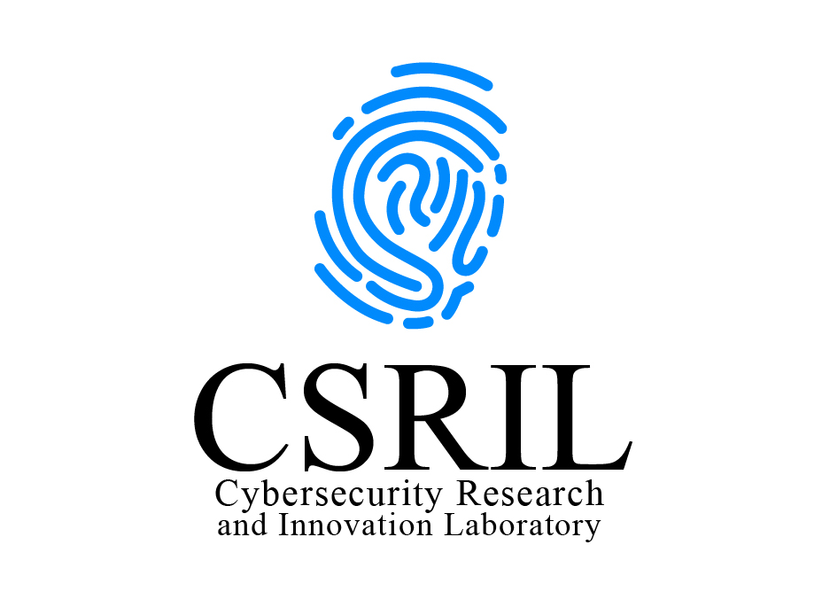
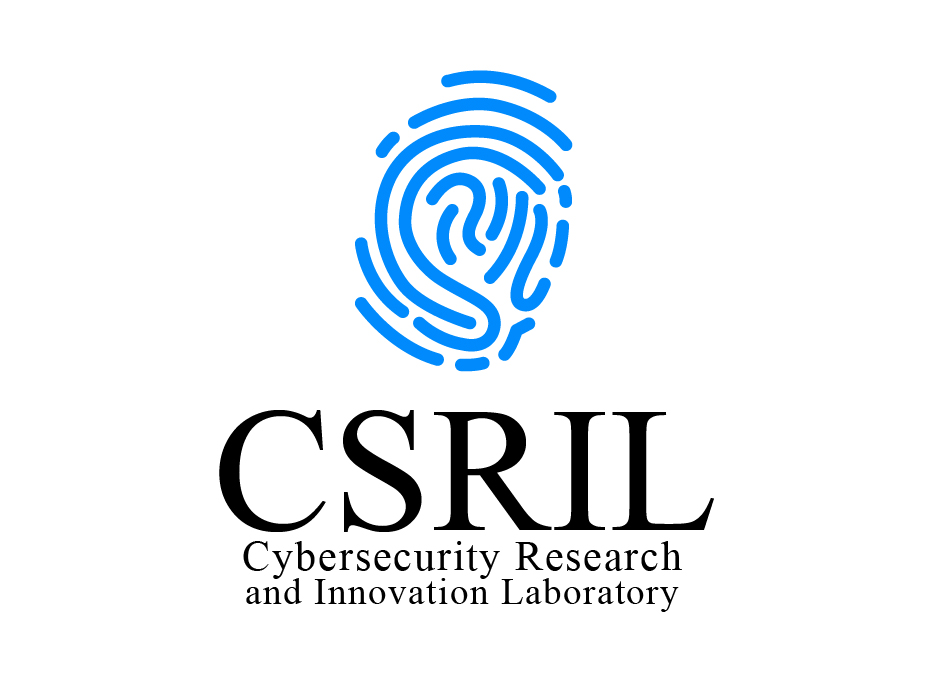

In August 2023, I was featured as a part of the "Why I Teach" series at Texas A&M University - Corpus Christi. I would like to thank my students: Laila Romero, Efrén López Morales, and Jacob Hopkins, as well as my colleague Tianxing Chu for the wonderful words they shared about me. I am indeed in debt with all of you.
 I lead the Cybersecurity Research and Innovation Laboratory (CSRIL) at Texas A&M University - Corpus Christi. I have experience on the inception, preparation and communication of ideas, and I can effectively contribute to projects that focus on effectiveness, efficiency, and innovation. My research interests lay at the intersection of cybersecurity and software specification, verification, and validation. Concretely, I have experience on the development of techniques for verifying the correct implementation of access control models at the source-code level using formal specifications. Also, I have interest in the enforcement of fundamental cybersecurity principles and methodologies for emerging technologies, e.g., authorization and access control. Also recently, I have explored approaches for enhancing the protection of mission-critical cyber-infrastructures such as Energy Delivery Systems (EDS) and Unmanned Aerial Vehicles (UAVs), a.k.a., drones.
NEWS NEWS NEWS!
- September 25, 2024: I had the pleasure to be interviewed by our local TV station KIII 3 News on a recent report from the FTC revealing the mass surveillance and the potential privacy violations of major social media and cellphone companies throughout the country.
- September 22, 2024: Our paper: By the Numbers: Towards Standard Evaluation Metrics for Programmable Logic Controllers' Defenses , written with our students Efrén López Morales and Jacob Hopkins, and my colleagues Alvaro A. Cardenas and Ali Abbasi, has been accepted for publication at the 2024 Workshop on Re-design Industrial Control Systems with Security (RICSS'24), co-located with the ACM Conference on Computer and Communications Security (CCS 2024).
- August 19, 2024: My student Efrén López Morales has formally passed his PhD Qualifying Exams, and, therefore, has advanced to Candidacy. Congratulations Efrén! He will be in the job market this 2024-2025 cycle!
- August 19, 2024: Our paper: ICSNet: A Hybrid-Interaction Honeynet for Industrial Control Systems, written with our students Luis Salazar, Efrén López Morales, and Juan Lozano, and my colleague Alvaro Cardenas, has been accepted for publication at The 6th Workshop on CPS and IoT Security (CPSIoTSec 2024), co-located with the ACM Conference on Computer and Communications Security (CCS 2024).
- August 5, 2024: Our paper: SoK: Security of Programmable Logic Controllers written with my student Efrén López Morales and my colleagues Alvaro Cardenas and Ali Abbasi, has been accepted for publication at the 33rd Usenix Security Symposium (USENIX 2024).
- August 1, 2024: My student, Ashutosh Mishra, co-advised with Miguel Cid Montoya, succesfully defended his MS Thesis: "Emulating Bridge Deck Aeroelastic Forces Under Forced Vibrations Via Transformers". Congratulations!
- July 1, 2024: Our paper: On the cybersecurity of smart structures under wind, written with my colleagues Miguel Cid Montoya and Ahsan Kareem, was accepted for publication at the Journal of Wind Engineering and Industrial Aerodynamics.
-
May 17, 2024:
Our papers:
Pairing Human and Artificial Intelligence: Enforcing Access Control Policies with LLMs and Formal Specifications, written with my student Akash Kotak and my colleagues Wenlu Wang and Karsten Sohr, and
SecureCheck: User-Centric and Geolocation-Aware Access Mediation Contracts for Sharing Private Data, written with my student Jacob Hopkins,
and
Circles of Trust: A Voice-Based Authorization Scheme for Securing IoT Smart Homes , written with my students Jennifer Mondragon and Gael Cruz and my colleague Dvijesh Shastri,
were accepted for publication and presented at ACM SACMAT 2024.
Research Affiliation and Interests
 I lead the Cybersecurity Research and Innovation Laboratory (CSRIL) at Texas A&M University - Corpus Christi. I have experience on the inception, preparation and communication of ideas, and I can effectively contribute to projects that focus on effectiveness, efficiency, and innovation. My research interests lay at the intersection of cybersecurity and software specification, verification, and validation. Concretely, I have experience on the development of techniques for verifying the correct implementation of access control models at the source-code level using formal specifications. Also, I have interest in the enforcement of fundamental cybersecurity principles and methodologies for emerging technologies, e.g., authorization and access control. Also recently, I have explored approaches for enhancing the protection of mission-critical cyber-infrastructures such as Energy Delivery Systems (EDS) and Unmanned Aerial Vehicles (UAVs), a.k.a., drones.
Research Funding
-
CYBER-CARE: Transportation Cybersecurity Center for Advanced Research and Education
Consortia Members: University of Houston (Lead), Embry- Riddle Aeronautical University, Rice University, Texas A&M University-Corpus Christi, University of Cincinnati, University of Hawaii, Honolulu
Site: $500,000.00, Consortia: $10,000,000.00
August 2023 - July 2028. -
Enabling Zero-Trust Resource Access Management for Scientific Collaborations
National Science Foundation. Cybersecurity Innovation for Cyberinfrastructure (CICI) Program
Award No. 2232911. $591,664.0.
October 2022 - September 2025.
-
Dynamically Enforcing User-Oriented Geospatial Restrictions for Drone Fly-Overs
National Science Foundation. Computer and Information Science and Engineering Minority-Serving Institutions (CSE-MSI) Research Expansion Program
Award No. 2131263. $486,455.00
October 2021 - September 2024. -
Acquisition of High-Performance Computing Cluster for Research in Engineering, Science, and
Technology
National Science Foundation. Major Research Instrumentation Program
Award No. 2216335. $1,166,605.00
October 2022 - September 2025.
Publications: Summary
My research work has led to 40+ publications in prestigious venues including the ACM Conference in Computer and Communications Security (CCS), the USENIX Security Symposium (USENIX), the IEEE Security & Privacy Symposium (S&P), the ACM Symposium on Access Control Models and Technologies (SACMAT), the ACM Conference on Data and Applications Security and Privacy (CODASPY), the IEEE International Computer Software and Applications Conference (COMPSAC), among others.
Publications: Ph.D. Dissertation
-
Federated Access Management for Collaborative Environments
Carlos E. Rubio-Medrano
Arizona State University,
Tempe, AZ, USA, December, 2016
(PDF) (BibTex)
Publications: Authorization and Access Control
-
SecureCheck: User-Centric and Geolocation-Aware Access Mediation Contracts for Sharing Private Data
Jacob Hopkins and Carlos E. Rubio-Medrano
The 29th ACM Symposium on Access Control Models and Technologies (SACMAT),
San Antonio, Texas, USA, May 15-17, 2024
(PDF) (BibTex) (Website)
-
Circles of Trust: A Voice-Based Authorization Scheme for Securing IoT Smart Homes
Jennifer Mondragon, Gael Cruz, Dvijesh Shastri, and Carlos E. Rubio-Medrano
The 29th ACM Symposium on Access Control Models and Technologies (SACMAT),
San Antonio, Texas, USA, May 15-17, 2024
(PDF) (BibTex) (Website)
-
SpaceMediator: Leveraging Authorization Policies to Prevent Spatial and Privacy Attacks in Mobile Augmented Reality
Luis Claramunt, Carlos E. Rubio-Medrano, Jaejong Baek, and Gail-Joon Ahn
The 28th ACM Symposium on Access Control Models and Technologies (SACMAT),
Trento, Italy, June 7-9, 2023
(PDF) (BibTex)
-
DyPolDroid: Protecting Against Permission-Abuse Attacks in Android (Extended Version)
Carlos E. Rubio-Medrano, Pradeep Kumar Duraisamy Soundrapandian, Matthew Hill, Luis Claramunt, Jaejong Baek, Geetha S, and Gail-Joon Ahn
Information Systems Frontiers Journal, Special Issue on Secure Knowledge Management in the Age of Artificial Intelligence,
February, 2022
(PDF) (BibTex)
-
DyPolDroid: Protecting Users and Organizations from Permission-Abuse Attacks in Android
Carlos E. Rubio-Medrano, Matthew Hill, Luis Claramunt, Jaejong Baek, and Gail-Joon Ahn
The International Conference on Secure Knowledge Management in the Artificial Intelligence Era (SKM 2021),
San Antonio, Texas, USA, October 8-9, 2021
(PDF) (BibTex) -
Proactive Risk Assessment for Preventing Attribute-Forgery Attacks to ABAC Policies
Carlos E. Rubio-Medrano, Luis Claramunt, Shaishavkumar Jogani and Gail-Joon Ahn
The 25th ACM Symposium on Access Control Models and Technologies (SACMAT),
Barcelona, Spain, June 10-12, 2020
(PDF) (BibTex) -
Effectively Enforcing Authorization Constraints for Emerging Space-Sensitive Technologies
Carlos E. Rubio-Medrano, Shaishavkumar Jogani, Maria Leitner, Ziming Zhao and Gail-Joon Ahn
The 24th ACM Symposium on Access Control Models and Technologies (SACMAT),
Toronto, Canada, June 3-6, 2019
(PDF) (BibTex) -
Towards Effective Verification of Multi-Model Access Control Properties
Bernhard J. Berger, Christian Maeder, Rodrigue Wete Nguempnang, Karsten Sohr, and Carlos E. Rubio-Medrano
The 24th ACM Symposium on Access Control Models and Technologies (SACMAT),
Toronto, Canada, June 3-6, 2019
(PDF) (BibTex) -
RiskPol: A Risk Assessment Framework for Preventing Attribute-Forgery Attacks to ABAC Policies
Carlos E. Rubio-Medrano, Ziming Zhao and Gail-Joon Ahn
3rd ACM Workshop on Attribute-based Access Control (ABAC), in conjuction with CODASPY 2018,
Tempe, AZ, USA, March 21, 2018
(PDF) (BibTex) -
Mutated Policies: Towards Proactive Attribute-based Defenses for Access Control
Carlos E. Rubio-Medrano, Josephine Lamp, Adam Doupé, Ziming Zhao and Gail-Joon Ahn
2017 Workshop on Moving Target Defense, in conjuction with CCS 2017,
Dallas, TX, USA, October 30, 2017
(PDF) (BibTex) -
Towards a Moving Target Defense Approach for Attribute-based Access Control
Carlos E. Rubio-Medrano, Josephine Lamp, Marthony Taguinod, Adam Doupé, Ziming Zhao and Gail-J. Ahn
1st ACM Workshop on Attribute-based Access Control (ABAC),
New Orleans, LA, USA, March 11, 2016
(PDF) (BibTex) -
Federated Access Management for Collaborative Network Environments: Framework and Case Study
Carlos E. Rubio-Medrano, Ziming Zhao, Adam Doupé and Gail-J. Ahn
ACM Symposium on Access Control Models and Technologies (SACMAT),
Vienna, Austria, June 1-4, 2015
(PDF) (BibTex) -
Secure Collaborations with Attribute-based Access Control
Carlos E. Rubio-Medrano, Clinton D'Souza and Gail-J. Ahn
IEEE International Conference on Collaborative Computing: Networking, Applications and Worksharing (CollaborateCom), Austin, TX, USA, October 20-23, 2013.
(PDF) (BibTex)
Publications: Energy Delivery Systems
-
By the Numbers: Towards Standard Evaluation Metrics for Programmable Logic Controllers' Defenses
Efrén López Morales, Jacob Hopkins, Alvaro A. Cardenas, Ali Abbasi, and Carlos Rubio-Medrano
The 2024 Workshop on Re-design Industrial Control Systems with Security (RICSS'24),
October 14-18, 2024, Salt Lake City, UT, USA.
(PDF) (BibTex) (Website)
-
ICSNet: A Hybrid-Interaction Honeynet for Industrial Control Systems
Luis Salazar, Efrén López Morales, Juan Lozano, Carlos E. Rubio-Medrano, and Alvaro Cardenas
The 6th Workshop on CPS and IoT Security (CPSIoTSec 2024), co-located with the ACM Conference on Computer and Communications Security (CCS 2024),
Salt Lake City, UT, October 14-18, 2024.
(PDF) (BibTex) (Website)
-
SoK: Security of Programmable Logic Controllers
Efrén López Morales, Carlos E. Rubio-Medrano, Alvaro Cardenas, and Ali Abbasi
The 33rd Usenix Security Symposium (USENIX 2024),
Philadelphia, PA, USA, August 14-16, 2024.
(PDF)
(BibTex)
(Website)
- Toward Automated Enforcement of Cyber-Physical Security Requirements for Energy Delivery Systems Carlos E. Rubio-Medrano, Ziming Zhao and Gail-Joon Ahn The IEEE International Conference on Trust, Privacy and Security in Intelligent Systems, and Applications (TPS), Virtual Event, December 3, 2020. (PDF) (BibTex)
- ExSol: Collaboratively Assessing Cybersecurity Risks for Protecting Energy Delivery Systems (Extended Version) Josephine Lamp, Carlos E. Rubio-Medrano, Ziming Zhao and Gail-Joon Ahn ACM Digital Threats: Research and Practice (DTRAP), Journal, December 31, 2020. (PDF) (BibTex)
- HoneyPLC: A Next-Generation Honeypot for Industrial Control Systems Efrén López Morales, Carlos E. Rubio-Medrano, Adam Doupé, Yan Shoshitaishvili, Ruoyu Wang Tiffany Bao and Gail-Joon Ahn The ACM Conference on Computer and Communications Security (CCS) 2020, Virtual Event, November 9-13, 2020. (PDF) (BibTex)
-
ExSol: Collaboratively Assessing Cybersecurity Risks for Protecting Energy Delivery Systems
Josephine Lamp, Carlos E. Rubio-Medrano, Ziming Zhao and Gail-Joon Ahn
The 7th IEEE Workshop on Modeling and Simulation of Cyber-Physical Energy Systems (MSCPES 2019),
Montreal, Canada, April 15th, 2019
(PDF) (BibTex) -
ExSol: Collaboratively Assessing Cybersecurity Risks for Protecting Energy Delivery Systems
Josephine Lamp, Carlos E. Rubio-Medrano, Ziming Zhao and Gail-Joon Ahn
The 7th IEEE Workshop on Modeling and Simulation of Cyber-Physical Energy Systems (MSCPES 2019),
Montreal, Canada, April 15th, 2019
(PDF) (BibTex) -
EDSGuard: Enforcing Network Security Requirements for Energy Delivery Systems
Vu Coughlin, Carlos E. Rubio-Medrano, Ziming Zhao and Gail-Joon Ahn
IEEE International Conference on Communications, Control and Computing Technologies for Smart Grids (SmartGridComm 2018) (To Appear),
Aalborg, Denmark, October 29 - November 1, 2018
(PDF) (BibTex) -
OntoEDS: Protecting Energy Delivery Systems by Collaboratively Analyzing Security Requirements
Josephine Lamp, Carlos E. Rubio-Medrano, Ziming Zhao and Gail-Joon Ahn
3rd IEEE International Conference on Collaboration and Internet Computing,
San Jose, CA, USA, October 15-17, 2017
(PDF) (BibTex) -
Towards Adaptive and Proactive Security Assessment for Energy Delivery Systems
Josephine Lamp, Carlos E. Rubio-Medrano, Ziming Zhao and Gail-J. Ahn
2017 Workshop on Modeling and Simulation of Cyber-Physical Energy Systems (MSCPES),
Pittsburgh, PA, USA, April 21, 2017
(PDF) (BibTex)
Publications: Software Verification and Validation
-
Asserting Frame Properties
Yoonsik Cheon, Bozhen Liu, and Carlos E. Rubio-Medrano
The 19th International Conference on Software Technologies (ICSOFT),
SciTePress, Pages 145-152, 2024
(PDF) (BibTex)
-
Pairing Human and Artificial Intelligence: Enforcing Access Control Policies with LLMs and Formal Specifications
Carlos E. Rubio-Medrano, Akask Kotak, Wenlu Wang, and Karsten Sohr
The 29th ACM Symposium on Access Control Models and Technologies (SACMAT),
San Antonio, Texas, USA, May 15-17, 2024
(PDF) (BibTex) (Website)
-
Achieving Security Assurance with Assertion-based Application Construction (Extended Version)
Carlos E. Rubio-Medrano, Gail-J. Ahn and Karsten Sohr
EAI Endorsed Transactions on Collaborative Computing,
Special Issue of TrustCol 2014,
European Alliance for Innovation, September 2015
(PDF) (BibTex) -
Achieving Security Assurance with Assertion-based Application Construction
Carlos E. Rubio-Medrano, Gail-J. Ahn and Karsten Sohr
IEEE International Workshop on Trusted Collaboration (TrustCol),
In conjuction with IEEE CollaborateCom,
Miami, Florida, USA, October 22, 2014
(PDF) (BibTex) -
Verifying Access Control Properties with Design by Contract
Carlos E. Rubio-Medrano, Gail-J. Ahn and Karsten Sohr
IEEE International Computer Software and Applications Conference (COMPSAC),
Kyoto, Japan, July 22-26, 2013.
(PDF) (BibTex) -
Access Control Contracts for Java Program Modules
Carlos E. Rubio-Medrano and Yoonsik Cheon
IEEE International Workshop on Security, Trust, and Privacy for Software Applications (STPSA),
Seoul, Korea, July 19-23, 2010.
(PDF) (BibTex) -
Architectural Assertions: Checking Architectural Constraints at Run-Time
Hyotaeg Jung, Carlos E. Rubio-Medrano, Eric Wong, and Yoonsik Cheon
The 6th International Workshop on System and Software Architectures,
Published in Proceedings of SERP 2007, Volume II, pages 604-607,
Las Vegas, Nevada, USA, June 25-28.
(PDF) (BibTex) -
Random Test Data Generation for Java Classes Annotated with JML Specifications
Yoonsik Cheon and Carlos E. Rubio-Medrano
In Proceedings of the 2007 International Conference on Software Engineering Research and Practice,
Volume II, pages 385-392,
Las Vegas, Nevada, USA, June 25--28, 2007.
(PDF) (BibTex) -
A Formal Specification in JML of the Java Security Package
Poonam Agarwal, Carlos E. Rubio-Medrano, Yoonsik Cheon, and Patricia J. Teller
Advances and Innovations in Systems, Computing Science, and Software Engineering,
pages 363-368, Springer, 2007.
(PDF) (BibTex)
Publications: Cybersecurity Topics
-
On the cybersecurity of smart structures under wind
Miguel Cid Montoya, Carlos E. Rubio-Medrano, and Ahsan Kareem
Journal of Wind Engineering and Industrial Aerodynamics
Volume 251, August 2024,
(PDF) (BibTex) (Website)
-
A First Look at Cybersecurity of Structures Under Wind
Miguel Cid Montoya, Carlos E. Rubio-Medrano, and Ahsan Kareem.
The 16th International Conference on Wind Engineering (16ICWE),
Florence, Italy, August 27-31, 2023
(PDF) (BibTex) -
Flawed, but like democracy we don't have a better system: The Experts' Insights on the Peer Review Process of Evaluating Security Papers
Ananta Soneji, Faris Bugra Kokulu, Carlos E. Rubio-Medrano, Tiffany Bao, Ruoyu Wang, Yan Shoshitaishvili and Adam Doupé
The 2022 IEEE Symposium on Security and Privacy (S&P),
San Francisco, CA, USA, 2022
(PDF) (BibTex) -
Having Your Cake and Eating It: An Analysis of Concession-Abuse-as-a-Service
The 30th Usenix Security Symposium (USENIX 2021),
Vancouver, Canada, August 11-13, 2021
(PDF) (BibTex) -
Understanding and Detecting Private Interactions in Underground Forums
Eric Sun, Ziming Zhao, Carlos E. Rubio-Medrano, Tiffany Bao and Gail-Joon Ahn
The 9th ACM Conference on Data and Application Security and Privacy (CODASPY 2019),
Dallas, Texas, USA, March 25 - 27, 2019
(PDF) (BibTex) -
The Danger of Missing Instructions: A Systematic Analysis of Security Requirements for MCPS
Josephine Lamp, Carlos E. Rubio-Medrano, Ziming Zhao and Gail-Joon Ahn
3rd International IEEE/ACM Conference on Connected Health: Applications, Systems and Engineering Technologies: CHASE-MedSPT 2018,
Washington, DC, USA, September 26-28, 2018
(PDF) (BibTex)
Teaching Experience
- COSC 6370: Advanced Software Engineering. Spring 2022, Fall 2022, Spring 2023
- COSC 6374: Computer Forensics. Spring 2021, Spring 2022, Spring 2023, Fall 2024
- COSC 6379: Advanced Information Assurance. Fall 2021
- COSC 4342: Computer Networks. Spring 2020
- CSE 365: Introduction to Information Assurance. Spring 2019
- CSE 465: Introduction to Information Assurance. Spring 2018
- CSE 110: Introduction to Programming with Java. Fall 2014, Spring 2014, Fall 2013